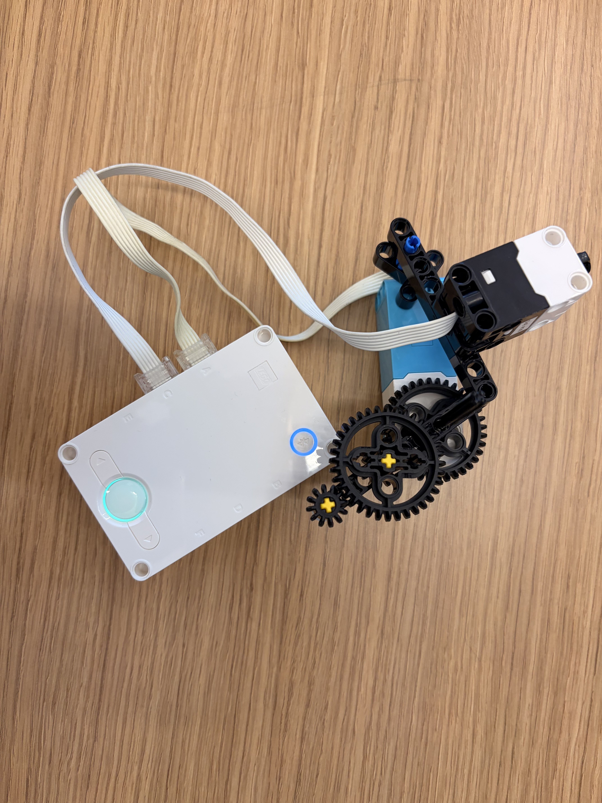
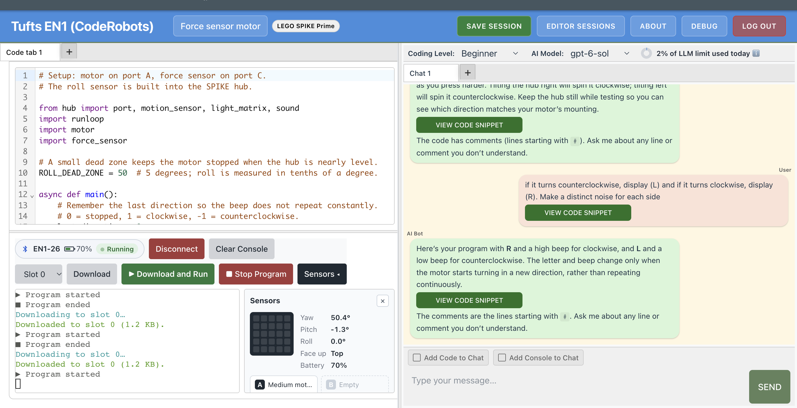

This lesson was about learning how to use the Spike Prime sensors, as a first step toward a future project I'm working on: an astronaut tool.
When the hub turns right, the motor turns clockwise. When the hub turns left, the motor turns counterclockwise. The motor spins when the force sensor is pressed.
Here is my CodeRobots.ai session for this lesson.
